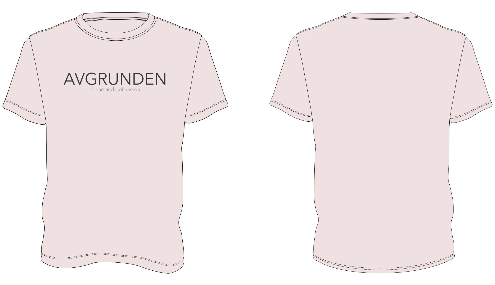

Lyrics
Nya människor
Vi satt och trevade efter orden
som båda ville skynda förbi
Det var rätt ödsligt mellan borden
där stod glas utan något i
Vi söp oss fulla och klädde av oss
men sen somnade vi ifrån
Vi blev för gamla och begravdes
men det kom nya människor
De löste klimatkrisen
Det gick ganska bra
De möttes första gången redan samma dag
Från det ögonblicket visste de båda två
men de hade ingen aning om hur det skulle gå
De söp sig fulla och klädde av sig
men sen somnade de ifrån
och nästa morgon var det konstigt
och när hon skulle gå
De gick och tänkte på varandra
men sen behövde de nya skor
De började träffa några andra
och det kom nya människor
Som lämnade jorden
och befolkade Mars
De började gå till ett ställe på en bergig plats
Det tog ganska lång tid innan någon fattade mod
men till slut så möttes de två vid ett bord
De satt och trevade efter orden
som båda ville skynda förbi
De började hångla där mellan borden
De kunde inte låta bli
De söp sig fulla och klädde av sig
men sen somnade de ifrån
De blev för gamla och begravdes
men det kom nya människor
och det kom nya människor
och det kom nya människor
och det kom nya människor…
Normal
Jag är normal
Jag har normala känslor
Jag tänker normala tankar
Jag är alldeles normal
Jag har normala drömmar
och normala sjukdomar
Jag plågas på normalt vis
Jag har normalstor aptit
Kom och var normal med mig
så ska jag vara norma för dig
Jag är normalirriterande
Jag har normala begär
Jag har normal klåda
Jag har helt normala besvär
Jag är normalberoende
Jag har normal abstinens
Jag har normaldåligt självförtroende
Jag är normalinkompetent
Kom ska jag viska något normalt til dig
Jag har normala känslor för dig
Jag är normalmisslyckad
Jag är normalaningslös
Jag har normala nycker
Jag är normalpromiskuös
Jag är normalanständig
Jag har normalstora skor
Jag är normaleländig
Jag är en normal idiot
Jag är normal
Jag är normal
Jag är normal
Skitunge
Kladdiga små fingrar runt mitt hjärta
och snor uti mitt hår
När du står och hoppar på min mage
och bankar mig i huvet med nåt hårt
Lilla skitunge
Hur jag älskar dig
Mammas skitunge
du gör ont i mig
Lilla skitunge
Du gör så livet bränns
Mammas skitunge
du gör ont i mig
Dina kloka ögon ser igenom mig
Jag hukar inför din blick
Jag kan inte låtsas att jag är nåt mer
än den enda, ynka mamman som du fick
Lilla skitunge…
Den natten då du föddes
så skrek jag väl
som om jag skulle gå itu
Men den smärtan som jag kände då
är ingenting mot det jag känner nu
Lilla skitunge…
Inget mörker
Framtiden är ljus
Som en nära döden-upplevelse
Jag sitter i mitt hus
I skenet av en skärm
Och när jag går ut blir jag bländad av solen
Och när jag går in igen är jag solblind
Där genom ljuset kommer du
i din Volvo XC 90
och barnen hänger om din hals
Det finns inget mörker alls
Natten tar aldrig slut
den har besegrat dagen
Jag ligger i min säng
med ansiktet mot rymden
Jag håller i mig hårt
för att inte falla rakt ut
bland svarta hål och tomma planeter
Där genom mörkret hör jag steg
tassande fötter komma
En liten arm om min hals
Det finns inget mörker alls
Vi stuvar in oss allihopa
vi får nästan inte rum
och Sverige far förbi utanför fönstret
och vi har extra vatten i en dunk
Där genom ljuset åker vi
i vår Volvo XC 90
påväg mot nån annanstans
Det finns inget mörker alls
Feber
Det surrar av kvarglömda matrester
i gräset av polyetylen
och det ligger en människa på asfalten
som solen gjort brännande het
Jag går runt och skrattar och dansar
tills jag fastnar i ett staket
och jag trillar omkull och faller
så att kjolen åker upp och alla ser
Jag sjunger så att rösten brister
Jag klättrar upp i träd och faller ner
och jag rullar ner för slänten
tills huvudet träffar en sten
Vi står och andas in dammet i solstrålen
Det susar i något rör
och vi ser varann in i ögonen
och vi ser sådant
som ingen annan gör
Avgrunden
På botten av avgrunden
har jag byggt ett bo åt mig
där ligger jag under min filt
och kvider så det står härliga till
Jag har det bra i avgrunden
kan inte trilla ner från den
helt underkastad plädens våld
tryggt förankrad på själens golv
Jag ligger där i avgrunden
och tittar upp mot himmelen
den är inte så väldigt långt bort
bara en avgrund av annan sort
Vad är du så rädd för?
Du tittar ner på mig med förfäran
men vågar inte klättra ner och se
Vad står du och gapar för?
Att jag ska resa mig på din begäran?
Jag tänker inte lyssna på dig mer
Kom och hälsa på hos mig
på botten av avgrunden
vi kan vältra oss tillsammans i skit
lära känna varandra bit för bit
Slutet
Det tog slut
Det upphörde
Och fanns inte mer
Det gick över
Och slocknade
Det blev inga fler
Det tog stopp
och stannade upp
och lades bara ner
det var förbi
det var färdigt
det var ingen idé
Och det började ingenting nytt
och det kom aldrig igång igen
och det blev ingenting
utöver det som varit
Det blev tyst
det blev öde
det hördes ingenting
Det blev tomt
vi blev utan
och alla gick in
Det blev mörkt
det blev kolsvart
vi såg ingenting
Vi försvann
vi gick vilse
vi kom inte igen
Och det var ingenting som tog vid
där det gamla hade slutat
och vi väntade på att nåt skulle ske
men det gjorde det inte
Och det gick en ganska lång tid
men det hände ingenting nu heller
och det varade en evighet
och ännu längre
Ah ah ah...
Vi satt tysta
på en spårvagn
det var någonting
Vi stod och skrek
i ett gathörn
med folk runtomkring
Jag satte nyckeln
i dörren
och sen gick vi in
Jag ville gråta
eller slå dig
men jag gjorde ingenting
Och vi satte oss ner i soffan
och det hände ingenting nu heller
och det varade en evighet
och ännu längre
Och jag försökte resa mig ur soffan
och jag försöker det ännu
och jag väntar på att komma upp
men det gör jag inte
Och det började ingenting nytt
och det kom aldrig igång igen
och det blev ingenting
utöver det som varit
som varit
som varit
Undergången
Först var det solen som sken
Vi hyllade vackert väder
Därpå torkan som sved
Och brände sönder all säden
När regnet sen föll ner
blev vi tvungna att byta kläder
Och vattnet steg mer och mer
Och täckte snart skogar och städer
Du flöt iväg, det gick så fort
Med tallrikar, tavlor och möbler
Jag höll mig fast i något stort
Tills ovädret var över
Jorden blev slipprig och hal
Det blev svårt att finna fäste
Jag gled ner i dal
Tillsammans med övriga rester
Vi enstaka som överlevt
En sorgesam människoskara
Som visste allt om enslighet
Men inget om hur det ska vara
Nu bygger vi något slags hus
Utan bärande konstruktioner
Försöker uppfinna eld och hjul
Och lära oss basala funktioner
De fräknar som täckte din kind
Har jag satt som frön i marken
Nu växer där vallmo och lin
Och något jag aldrig sett förut
Trots minnet av vår syndaflod
Så ekar nu ropen och skratten
Vi ger varandra tröst och mod
Och sjunger oss hesa om natten
Skogen
Ensam är stark
Och ensam är i skogen
Träd överallt
de river mig på låren
när jag kommer hem
så vill jag ha en vän som inte springer bort
Munnen på honom
var till hälften öppen
ögonen rörde
sig under ögonlocken
någonstans förnam han mig
i utkanten, en skugga i en dröm
När jag gick ut
var solen inte uppe
avlägsna ljud
och någonting i luften
skulle gå åt höger men jag glömde bort åt vilket håll det var
Skärva av glas
bland alla människospillror
sköraste slag
av tusen svaga viljor
Du är bara en av alla oss
som snubblar runt på denna jord
Other Projects

Unos visor
Web-app with children's songs
Songs, lyrics, design and animations by Elin Amanda Johansson.
Piano - Ola Jansson
Illustrations by Ninja Agborn
Ada's world
Pedagogical app for learning mathematical programming.
Music, design, story and concept by Elin Amanda Johansson.
Contact
Send an email to irosarum@gmail.com.
Merch
Buy the t-shirt!

Organic and super cute. Only 20 e plus delivery fees. Send an order email to irosarum@gmail.com.